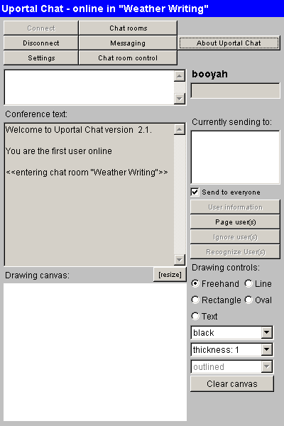

Each offering comes equipped with chat capabilities. This will allow enrolled users to communicate with each other in a real-time environment. To launch the chat session, locate the Chat channel and complete the following steps.
Launching the Chat Session

Chat Features
To communicate in the chat window, simply click within the white box towards the top of the window and type. In order for others to see what you have typed, you must hit ENTER after you're done typing.
All chat participants share the Drawing Canvas. Sometimes pictures work better than words, so here you can draw shapes and figures for others to see. If the canvas becomes too crowded, simply click the Clear canvas button to wipe the slate clean.
You will notice some of the buttons at the top of the chat window. If any of these buttons are grayed out, that means you either do not have permission to use this feature or it is not possible to do this at this time.
|
Messaging - This button lists online users and allows you to send instant private messages to any one user on the list. The following buttons can only be used when you have selected an online user from the Currently Sending to: list on the right side of the window: |
|
User Information - Click this button to find out more about any selected user. |